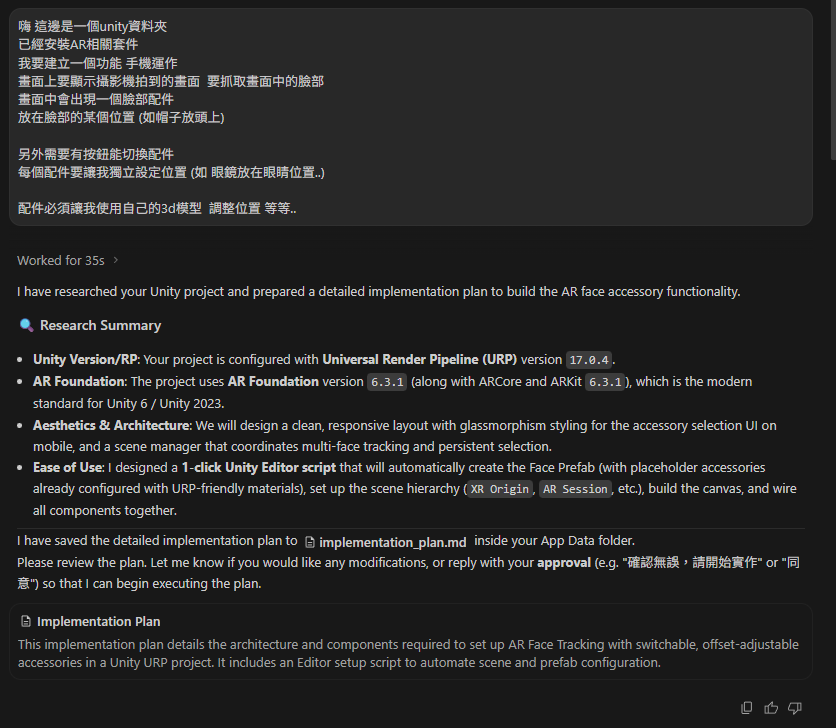

Agent AI 與 Antigravity
2026-05-26什麼是 Agent AI
Agent AI（代理型 AI）是指能自己拆解任務、呼叫工具、讀寫檔案、執行指令，再依結果調整下一步的 AI。它不只是回答問題，而是在使用者授權範圍內，幫你把事情實際做完。
什麼是 Antigravity
Antigravity 是 Google 在 2025 年底推出的代理型開發環境，由 Gemini 3 驅動，介面類似一個進階版的 VS Code，但每個任務都交給 AI 代理執行。特色：
- 內建 Agent Manager，可同時管理多個任務代理
- 直接操作編輯器、終端機、瀏覽器
- 自動產生 Artifacts（計畫、截圖、操作記錄）方便人類驗證
- 支援 MCP、子代理與規格驅動的開發流程
為什麼需要它
- 把繁瑣設定（環境、套件、樣板程式碼）交給 AI 自動處理
- 學習新技術時，能邊看 AI 操作邊學
- 減少初學者卡關時間，把心力放在創作與設計
對沒寫過 Unity 的同學來說，這正是降低門檻的利器。
實際截圖
下圖是我們實際輸入給 Antigravity 的需求描述，以及它分析專案後自動產出的實作計畫：
